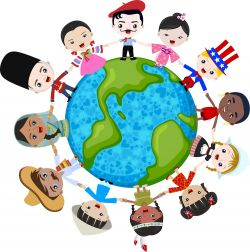

Cultura
Cultura se refiere al conjunto de bienes materiales y espirituales de un grupo social transmitido de generación en generación a fin de orientar las prácticas individuales y colectivas. Incluye lengua, procesos, modos de vida, costumbres, tradiciones, hábitos, valores, patrones, herramientas y conocimiento adquiridos por el hombre y la mujer cuando son miembros de una sociedad.
